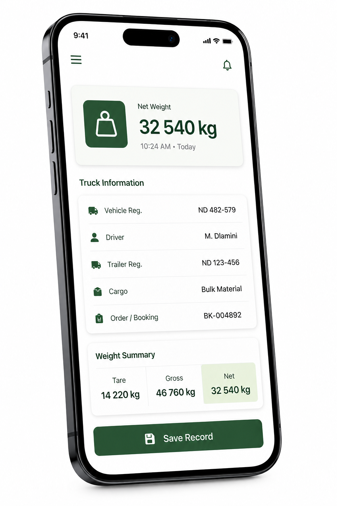
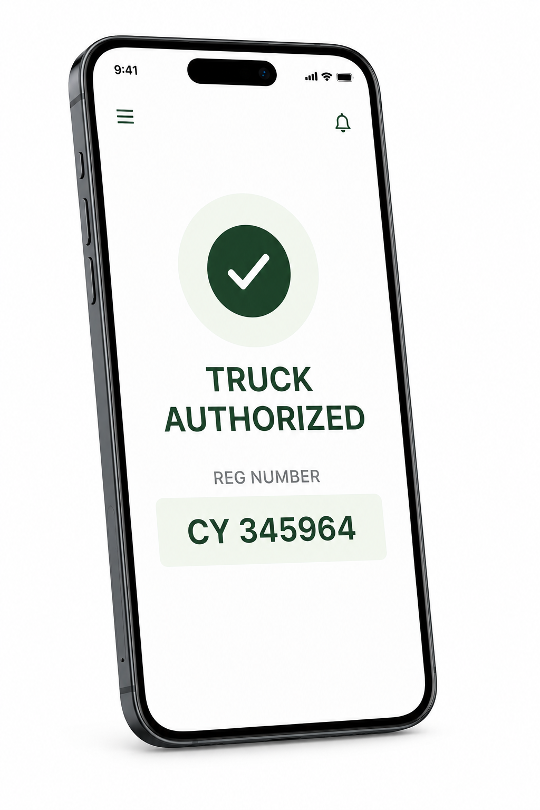

Mobile & offline execution
Capture Built for the Yard Floor, Not the Office.
CargoMan's mobile app is built around scanning and rapid capture rather than office-style data entry. Supported workflows are offline-capable and synchronise with the central platform when connectivity becomes available.
The operational problem
Sites Lose Capability When Connectivity Is Unreliable.
Yards, warehouses, and weighbridges don't always have office-grade connectivity - and paper-based fallbacks mean re-keying everything later.
Without Mobile, Offline-Capable Capture
- Operators write on paper when a connection drops, then re-key it
- Photos and signatures end up on personal phones or WhatsApp
- Manual, office-style data entry slows down floor operations
- There's no clear record of what was captured where and by whom
With CargoMan
- Supported workflows keep working with locally available operational data
- Photos and signatures capture directly into the transaction record
- Scan-first workflows reduce typing to what's actually needed
- Completed records synchronise centrally, attributed to the user and device
How the CargoMan workflow works
From Scan to Synchronised, Evidenced Record.
Work with Local Operational Data
Relevant orders, containers, and reference data are available on the device to support continued work during connectivity interruptions.
Scan and Capture
Barcodes, containers, vehicles, and documents are scanned rather than typed, reducing manual entry and errors.
Record Photos and Signatures
Mandatory or contextual photos and driver, tally-clerk, or supervisor signatures attach to the transaction.
Flag Damages and Exceptions
Exceptions are captured at the point of work, not reconstructed from memory afterwards.
Synchronise When Connected
Completed records and evidence synchronise with the central platform, with conflict handling that protects server truth.
Key capabilities
What Mobile Execution Covers.
- Scan barcodes, containers, vehicles, and documents
- Cargo receiving and dispatch transactions
- Container full-in, packed, full-out, and related lifecycle events
- Quantities, weights, lots, and client references
- Damage and exception capture
- Mandatory or contextual photographs
- Driver, tally-clerk, supervisor, or other signatures
- Local operational data supports continued work on site
- Background evidence upload for photo-heavy workflows
- Confirmed transactions can be locked to protect record integrity
CargoMan avoids absolute claims such as "fully offline" or "zero data loss." Supported workflows are offline-capable and synchronise when connectivity becomes available, with conflict handling that surfaces exceptions rather than silently overwriting them.
Inside CargoMan
What the Field Team Actually Sees.
Real CargoMan mobile screens from the yard - weight capture, then a confirmed status the operator can act on.

Weight Capture on the Yard
Truck, driver, and weight detail are recorded from the handheld device where the work happens.

Confirmed Status
A clear pass/fail result, not a screen full of raw data to interpret.
Connected modules
Mobile Capture Feeds Every One of These.
Evidence, controls & reporting
Locked Transactions Protect What's Already Confirmed.
Once a transaction is confirmed, it can be locked to protect record integrity. Conflicts during sync are surfaced as operational exceptions rather than silently resolved.
- Device and user attribution on every captured record
- Background evidence upload for photo-heavy workflows
- Conflict handling that protects server truth
- Confirmed transactions can be locked
Where this matters
Anywhere the Work Happens Away from a Desk.
Warehouses
Receiving and dispatch captured at the pallet, not the office.
Container Operations
Packing and photo evidence captured container-side.
Mining Logistics
Field capture where connectivity is often inconsistent.
Talk to CargoMan
Let's Map Your Mobile Workflow.
Show us where your teams capture work today, and we'll demonstrate how CargoMan can connect it.